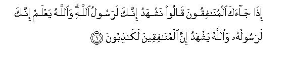
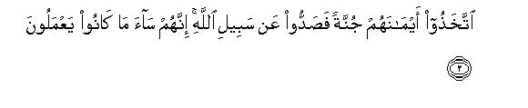
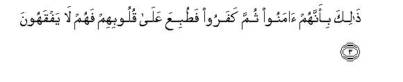
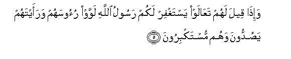
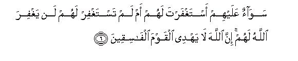
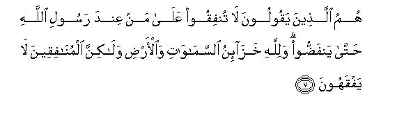
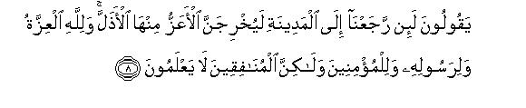
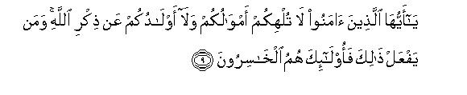
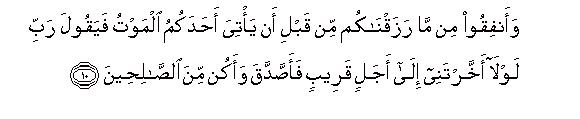
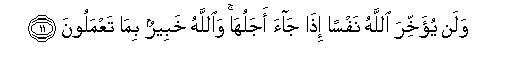

بسم الله الرحمن الرحيم
Sayyid Abul Ala Maududi - Tafhim al-Qur'an - The Meaning of the Qur'an
 63.
Surah Al Munafiqoon (The Hypocrites)
63.
Surah Al Munafiqoon (The Hypocrites)
The Surah takes its name from the sentence Idha jaa kal-munafiquna of verse 1. This is the name of the Surah as well as the title of its subject matter, for in it a review has been made of the conduct and attitude of the hypocrites themselves.
As we shall explain below this Surah was sent down either during the Holy Prophet's return journey from his campaign against Bani al- Mustaliq, or immediately after his arrival back at Madinah, and we have established by argument and research in the Introduction to Surah An-Nur that the campaign against Bani al-Mustaliq had taken place in Sha'ban A. H. 6:Thus, the date of the revelation of this Surah is determined precisely.
Before we mention the particular incident about which this Surah was sent down, it is necessary to have a look at the history of the hypocrites of Madinah, for the incident that occurred on this occasion was not a chance happening but had a whole series of events behind it, which ultimately led up to it.
Before the Holy Prophet's emigration to Madinah the tribes of the Aus and the Khazraj, fed up with their mutual rivalries and civil wars, had almost agreed on the leadership of one man and were making preparations to crown him their king. This was Abdullah bin Ubayy bin Salul, the chief of the Khazraj. Muhammad bin Ishaq has stated that among the people of Khazraj his authority was never contested and never had the Aus and the Khazraj rallied to one man before this. (Ibn Hisham, vol. II, p. 234)
Such were the conditions when the voice of Islam reached Madinah and the influential people of both the tribes started becoming Muslims. When before the Emigration, invitation was being extended to the Holy Prophet (upon whom be Allah'> peace) to come to Madinah, Hadarat Abbas bin Ubadah bin Nadlah Ansari wanted to defer this invitation for the reason that Abdullah bin Ubayy also might join in the declaration of allegiance and invitation to the Holy Prophet, so that Madinah might become the center of Islam by common consent. But the delegation that arrived in Makkah to declare their allegiance did not give any importance to the proposal of Abbas bin Ubadah, and a11 its members, who included 75 men from both the tribes, became ready to invite the Holy Prophet in the face of every danger.(lbn Hisham, vol. II, P. 89). We have given the details of this event in the Introduction to Surah Al-Anfal.
Then, when the Holy Prophet arrived in Madinah, Islam had so deeply penetrated every house of the Ansar that Abdullah bin Ubayy became helpless and did not see any other way to save his leadership than to become a Muslim himself. So, he entered Islam along with many of his followers from among the chiefs and leaders of both the tribes although their hearts were burning with rage from within. Ibn Ubayy in particular was filled with grief, for the Holy Prophet (upon whom be Allah's peace) had deprived him of his kingship. For several years his hypocritical faith and grief of being deprived of his kingdom manifested itself in different ways. On the one hand, when on Fridays the Holy Prophet (upon whom be Allah's peace) took his seat to deliver the Sermon, Abdullah bin Ubayy would stand up and say "O people, the Messenger of Allah is present among you, by whom Allah has honored you; therefore, you should support him and listen to what he says and obey him." (Ibn Hisham, vol. III, p. 111). On the other, his hypocrisy was being exposed day by day and the true Muslims were realizing that he and his followers bore great malice against Islam, the Holy Prophet and the Muslims.
Once when the Holy Prophet was passing on the way Abdullah bin Ubayy spoke to him in harsh words. When the Holy Prophet complained of it to Hadrat Sa'd bin Ubadah; he said:"O Messenger of Allah, don't be hard on him, for when Allah sent you to us we were making a diadem to crown him, and, by God, he thinks that you have robbed him of his kingdom." (Ibn Hisham vol: II, pp. 237-238).
After the Battle of Badr when the Holy Prophet (upon whom be Allah's peace) invaded the Jewish tribe of Bani Qainuqa on their breaking the agreement and un provoked revolt, this man stood up in support of them, and holding the Holy Prophet by his armor, said:"These 700 fighters have been helping and protecting me against every enemy; would you cut them down in one morning?By God, I will not leave you until you pardon my clients." (Ibn Hisham, vol. III, pp. 5l- 52).
On the occasion of the Battle of Uhud this man committed open treachery and withdrew from the battlefield with 300 of his companions. One should note that at this critical moment when he so acted, the Quraish had marched upon Madinah with 3,000 troops and the Holy Prophet had marched out with only 1,000 men to resist them. Of these 1,000 this hypocrite broke away with 300 men and the Holy Prophet was left with only 700 men to meet 3,000 troops of the enemy in the field.
After this incident the common Muslims of Madinah came to realize fully that he was certainly a hypocrite and his those Companions also were found who were his associates in hypocrisy. That is why when on the very first Friday, after the Battle of Uhud, this man stood up as usual to make a speech before the Holy Prophet's Sermon, the people pulled at his garment, saying "Sit down you are not worthy to say such things." That was the first occasion in Madinah when this man was publicly disgraced. Thereupon he was so filled with rage that he left the mosque jumping over the heads of the people. At the door of the Mosque some of the Ansar said to him, "What are you doing?Go back and ask the Holy Prophet (upon whom be Allah's peace) to pray for your forgiveness." He retorted "I do not, want him to pray for my forgiveness." (Ibn Hisham, vol. III, p. 111).
Then in A. H. 4 the Battle of Bani an-Nadir took place. On this occasion he and his companions supported the enemies of Islam even more openly. On the one side, the Holy Prophet (upon whom be Allah's peace) and his devoted Companions were preparing for war against their enemy, the Jews, and on the other, these hypocrites were secretly sending messages to the Jews to the effect: "Stand firm we are with you: if you are attacked, we will help you, and if you are driven out, we too will go out with you." The secret of this intrigue was exposed by Allah Himself, as has been explained in Surah Al-Hashr: 11-17 above.
But in spite of being so exposed the reason why the Holy Prophet (upon whom be Allah's peace) was still treating him kindly was that he had a large band of the hypocrites behind him. Many of the chiefs of both the Aus and the Khazraj were his supporters. At least a third of the population of Madinah consisted of his companions, as became manifest on the occasion of the Battle of Uhud. Under such conditions it was not prudent to wage a war with these internal enemies combined with the external enemies. On this very account, in spite of being fully aware of their hypocrisy the Holy Prophet continued to deal with them according to their apparent profession of faith for a long time. On the other hand, these people too neither possessed the power nor the courage to fight the believers openly as disbelievers, or to join hands with an invader and face them in the battlefield. Apparently they were a strong hand but inwardly they had the weakness which Allah has vividly portrayed in Surah Al-Hashr: 12-14. Therefore; they thought their well being lay only in posing as Muslims. They came to the mosque, offered the prayers gave away the zakat, and would make tall oral claims to the faith, which the true Muslims never felt the need to do. They would offer a thousand justifications for each of their hypocritical acts by which they would try to deceive their compatriots, the Ansar, into believing that they were with them. By these designs they were not only saving themselves from the disadvantages which could naturally accrue if they separated themselves from the Ansar brotherhood, but also taking advantage of the opportunities to make mischief which were available to them as members of the Muslim brotherhood.
These were the causes which enabled Abdullah bin Ubayy and like minded hypocrites to get an opportunity to accompany the Holy Prophet (upon whom be Allah's peace) in his campaign against the Bani al-Mustaliq, and they simultaneously engineered two great mischiefs which could shatter the Muslim unity to pieces. However, by virtue of the wonderful training in discipline that the Muslim; had received through the pure teaching of the Quran and the companionship of the Holy Prophet (upon whom be peace) both mischiefs were stopped in time, and the hypocrites themselves were disgraced instead. One of these was the mischief that has been mentioned in Surah An-Nur above, and the other which has been mentioned in this Surah.
This incident has been related by Bukhari, Muslim, Ahmad, Nasai, Tirmidhi, Baihaqi, Tabari, Ibn Marduyah, Abdur Razzaq, lbn Jarir Tabari, Ibn Sa'd and Muhammad bin Ishaq through many reliable channels. In some traditions the expedition in which it took place has not been named, and in others it has been connected with the Battle of Tabuk. But the authorities on the battles fought by the Holy Prophet and history are agreed that this incident took place on the occasion of the campaign against the Bani al- Mustaliq. The following seems to he the real story when all the traditions are read together.
When after crushing down the power of Bani al- Mustaliq the Islamic army had made a halt in the settlement at the well of al Muraisi. Suddenly a dispute arose between two men on taking water from the well; One of them was Jehjah bin Masud Ghifari, a servant of Hadrat Umar appointed to lead his horse. The other was Sinan bin Wabar al-Juhani, whose tribe was an ally of a clan of the Khazraj. Harsh words between them led to fighting and Jehjah kicked Sinan, which the Ansar, on account of their ancient Yamanite tradition, took as a great insult and disgrace. At this Sinan called out the men of Ansar and Jehjah the Emigrants for help. Hearing about the quarrel Ibn Ubayy started inciting and calling the men of the Aus and the Khazraj to come out and help their ally. From the other side some Emigrants also came out. The dispute might have led to a fight between the Ansar and the Muhajirin themselves at the very place where they had just fought an enemy tribe jointly and crushing it had halted in its own territory. But hearing the noise the Holy Prophet (upon whom be peace) emerged and said :"what is this call of paganism? What have you to do with such a call? Leave it, it is a dirty thing." Thereupon the leading men of the two sides met and settled the dispute; Sinan pardoned Jehjah and peace was restored.
After this every person whose heart was disaffected came to Abdullah bin Ubayy and they all said to him, "Until now we had our hopes attached to you and you were protecting us, but now it seems you have become a helper of these paupers against us. Ibn Ubayy was already enraged: These words made him burst out, thus: "This is what you have done to yourselves. You have given these people shelter in your country, and have divided your property among them. So much so that they have now become our rivals. Nothing so fits us and the paupers of Quraish(or the Companions of Muhammad) as the ancient saying 'Feed your dog to fatten it and it will devour you.' If you hold back your property from them, they would go elsewhere. By God, when we return to Madinah, the honorable ones will drive out from it the mean ones."
Zaid bin Arqam, a young boy, also happened to be present in the assembly at that time. He heard this and mentioned it before his uncle, and his uncle who was one of the Ansar chiefs went to the Holy Prophet (upon whom be peace) and told him the whole story. The Holy Prophet called Zaid and asked him what had happened and he repeated every word of what he had heard. The Holy Prophet said, "Zaid, you are perhaps displeased with Ibn Ubayy; you might have been mistaken in hearing; you. might have imagined Ibn Ubayy said this." But Zaid was sure and firm. He said, "No, I swear by God I have heard him say this and that." Thereupon the Holy Prophet called Ibn Ubayy, and he came and swore that he had not said any such thing. The people of the Ansar also said "Sir, a boy says this: he might have been mistaken in what he heard lbn Ubayy is a venerable old man and our chief. Do not believe what a boy says against him." The elderly people of the tribe reproved Zaid also, who became depressed and held his peace. But the Holy Prophet knew Zaid as well as Abdullah bin Ubayy. Therefore, he fully understood what had actually happened.
When Hadrat Umar came to know of this, he came to the Holy Prophet and said:"Please allow me to put this hypocrite to the sword. Or, if you do not think it is fit to give me the permission you may tell Muadh bin Jabal, or Abbad bin Bishr, or Sad bin Mu'adh, or Muhammad bin Maslamah from among the Ansar, to go and kill him."But the Holy Prophet said: "No, the people will say Muhammad kills his own Companions." After this he ordered the people to set off immediately, although it was at a time when the Holy Prophet was not accustomed to travel. The forced march continued for 30 hours at a stretch so that the people became exhausted. Then he halted, and as soon as they touched the ground they fell asleep. This he did to distract their minds from what had happened at the well of al-Muraisi. On the way, Hadrat Usaid bin Hudair, an Ansar chief, met the Holy Prophet, and said:"O Messenger of Allah, today you ordered the people to set off at a time which was disagreeable for traveling, a thing you have never done before."The Holy Prophet replied: "Have you. not heard of what your friend said?" When he asked who he meant, the Holy Prophet replied:Abdullah bin Ubayy. He asked what he had said. The Holy Prophet answered: "He has asserted that when he returns to Madinah the honorable ones will drive out from it the mean ones. He answered : "By God, O Messenger of Allah, you are the honorable one and he is the mean one; you will drive him out whenever you want to."
By and by the news spread among the Ansar soldiers and it enraged them against Ibn Ubayy. The people advised him to go to the Holy Prophet (upon whom be Allah's peace) and request for his forgiveness, but he retorted : "You asked me to believe in him, and I believed in him; you asked me to pay the zakat on my property, and I paid the zakat too; now the only thing left is that I should bow down to Muhammad."This further enraged the believing Ansar and everyone' started reproaching and cursing him roughly. When the caravan was about to enter Madinah, Abullah, the son of Abdullah bin Ubayy, stood before his father with a drawn out sword, and said: "You had said that when you reached Madinah, the honorable ones would drive out the mean ones. Now, you will know who is honorable you or Allah and His Messenger. By God, you cannot enter Madinah until the Messenger of Allah (upon whom be Allah's peace) permits you to enter." At this Ibn Ubayy cried out: "O people of Khazraj, look, my own son is preventing me from entering Madinah." The people conveyed this news to the Holy Prophet, and he said : "Tell Abdullah to let his father come home."Abdullah said, "If this is the Holy Prophet's order, then you may enter."Thereupon the Holy Prophet said to Hadrat Umar: "Now what do you think, Umar? Had you killed him on the day when you asked my permission to kill him, many people would have trembled with rage. Today if I order them to kill him, they will kill him immediately."Hadrat Umar replied "By God, I realize there was greater wisdom behind what the Apostle of Allah said than what I said."'
These were the circumstances under which this Surah was sent down most probably after the Holy Prophet's return to Madinah.

In the name of Allah, the Compassionate, the Merciful.



[1-3] O Prophet, when the hypocrites come to you, they say, "We bear witness that you are indeed Allah's Messenger." Yes, Allah knows that you are indeed His Messenger, but Allah bears witness that these Hypocrites are utter liars.1 They have made their oaths as a shield2 and so they hinder themselves and others from the Way of Allah.3 Evil indeed are the deeds that they do. This is because they believed and then they disbelieved. Therefore, a seal has been set on their hearts, and so they do not understand anything.4

[4] And when you see them, their figures would look marvelous; when they speak you would love to listen to what they say.5 But in reality they are like blocks of timber propped up against a wall.6 They deem every shout to be directed against them.7 They are the real enemies,8 so beware of them.9 May Allah destroy them!10 How are they being perverted?11


[5-6] And when it is said to them, "Come, the Messenger of Allah will pray for your forgiveness," they shake their heads and you see them turning away with arrogance.12 O Prophet, whether you pray for their forgiveness, or not, it is the same for them. Allah shall never forgive them,13 for Allah does not guide the transgressors.14


[7-8] They are the same people who say, "Do not spend anything on the Companions of the Prophet so that they disperse," though Allah is the Owner of the treasures of the heavens and the earth, but the hypocrites do not understand. They say, "When we return to Madinah, the honorable ones shall drive out from it the mean ones"15 although honor belongs to Allah and His Messenger and the believers,16 but the hypocrites do not know.



[9-11] O you17 who have believed, let not your possessions and your children distract you from the remembrance of Allah."18 Those who do so shall indeed be the losers. Spend from the provisions that We have given you before death should come to any of you and then he should say, "O my Lord, why did You not reprieve me awhile that I should have given in charity and become of the righteous?" But Allah does not at all reprieve a person when his term comes to an end, and Allah is well aware of what you do.
1That is, "Although the thing they. are uttering with the tongue is true by itself, it does not reflect their belief. Therefore they lie when they say that they bear witness that you are a Messenger of Allah." Here, one should clearly understand that an evidence or witness is composed of two things: first, the actual thing to which one bears the witness; second, the concerned person's own belief about the thing to which he bears the witness, Now, if the thing by itself is true and the belief of the bearer of witness also corresponds to what he says, he will be truthful in every respect. And if the thing in itself is false; but the beater of the witness believes it to be right and true, he will be regarded as truthful in one way, for he is truthful in expressing his belief, and liar in another way, for the thing he is bearing witness to is by itself false. Contrary to this, if the thing by itself is true but the belief of the bearer of the witness is opposed to it, he will be regarded as truthful because he is testifying to the right thing, and a liar because his own belief is contrary to what he is saying with the tongue. For instance, if a Believer states that Islam is a taste religion, he is truthful in every respect, but if a Jew, while he is steadfast in his Judaism, states the same thing, he would be stating the right thing but his evidence would be regarded as false, for he is testifying against his faith and belief. And if he calls it a false religion, he would be uttering a false thing but he would be beating a true witness according to his belief.
2That is, they use the oaths that they swear to convince others of their Islam and faith as a shield to save themselves from the wrath of the Muslims so that they do not treat them as they treat their open enemies.
These oaths may imply the oaths which they usually swear to convince others of their faith as well as those which they swore when they were caught committing some hypocritical act, and also those oaths which 'Abdullah bin Ubayy had sworn to contradict the report given by Hadrat Zaid bin Arqam. Besides these, there is another probability that Allah might have regarded this statement of theirs as an oath: "We bear witness that you are Allah's Messenger." This last probability has given rise to a dispute among the jurists, namely: If a person states something with the words: "I bear witness," will it be regarded as an oath or not? Imam Abu Hanifah and his companions (except Imam Zufar), Imam Sufyan Thauri and Imam Auza'i regard it as an oath (Yamin in the Shari'ah terminology). Imam Zufar says that it is not an oath. Two sayings from Imam Malik have been reported in this connection: first" that it is an oath absolutely, and second, that if while saying: "I bear witness," his intention was to say: “My God, I bear witness," or "I bear witness before God," it would he a statement on oath, otherwise not. Imam Shafe'i says: 'Even if the person says the words: "I bear witness before God." it would not be a statement made on oath, unless he uttered these words with the intention of swearing an oath," (AI-Jassas_, Ahkam al-Qur an; Ibn al'.Arabi. Ahkam al-Qur an).
3The verb sadd in Arabic is transitive as well as intransitive. Therefore, saddu 'an sabil-Allah means; "They turn away from the Way of Allah," as well as: 'they turn others away from the Way of Allah." According to the first meaning the verse would 'mean: "By means of these oaths they first plant themselves firmly among the Muslims and then invent ways to escape fulfilling demands of the faith and to avoid obedience to Allah and His Messenger. " According to the second meaning it would mean: "They use their false oaths as a cover for committing evil deeds. Posing as Muslims they weaken the Muslim community from within: find out the secrets of the Muslims and convey these to their enemies, create doubts about Islam among the non-Muslims and use such devices for inspiring the simple Muslims with evil suggestions which a hypocrite in the guise of a Muslim only could do, for an open enemy of Islam cannot use them.
4In this verse "believing" means professing the faith in order to be counted among Muslims, and 'disbelieving" means not to believe sincerely and to persist in disbelief as usual. The verse means to say that when they, after due thought, decided to adopt this hypocritical attitude instead of adopting either belief or disbelief plainly, Allah caused a seal to be set on their hearts and deprived them of the grace to adopt the attitude and conduct of a true, sincere and noble person. Now, their power of understanding has been lost, their moral sense has become dead, and while following this way they never even feel that their habit of always telling lies, their deceitful behavior and the ever present contradictions between their word and deed is a wretched state in which they have involved themselves.
This is one of those verses in which the meaning of ';causing a seal to be set on the heart of somebody by Allah" has been made clear. These people did not become hypocrites because Allah .had set a seal on their hearts; so faith did not enter them, and they became hypocrites under compulsion. But, in fact, Allah set a seal on their hearts only when they decided to persist in disbelief in spite of professing the faith outwardly. Then, they were deprived of the capacity to believe sincerely and of the grace of the moral attitude resulting from it. and were helped to persist in the hypocrisy and hypocritical morals, which they had chosen to adopt for themselves.
5Hadrat 'Abdullah bin 'Abbas has stated that 'Abdullah bin Ubayy was a strongly built, healthy, handsome and smooth-tongued person, and the same was the case with most of his companions. They were all the nobles of Madinah. When they came to sit in the Holy Prophet's assembly, they would sit reclining on cushions against the walls and would talk agreeably and convincingly. From their outward appearance and manner of speech no one could imagine that those honorable people of the city would be so wretched and degraded in their character.
6That is, "Those who sit reclining on cushions against the walls, are not but but pieces of timber. Comparing them to timber is meant to imply that they are devoid of the moral sense which is the essence of humanity Then by comparing them to blocks of timber propped up against the wall, it has also been pointed out that they are absolutely worthless, for the timber would be useful only when it has been utilized in making of a ceiling, or a door frame, or a piece of furniture. A block of timber that has just been placed against a wall serves no useful purpose at all."
7This brief sentence portrays the state of their guilty conscience. Since they fully well knew what game of hypocrisy they were playing tinder the screen of their superficial faith, they always remained in a state of alarm, thinking as to when the secret of their treason might be exposed, or the believers might feel disgusted with their evil deeds and machinations and take them co task for them. If ever a cry was raised anywhere in the city, or a noise was heard; they immediately grew alarmed and thought it was directed against themselves.
8In other words, these hidden enemies are more dangerous than the open enemies.
9That is, "Do not be deceived by their outward appearances. Beware of them, for they can deceive you at any moment. "
10This is not a curse but a declaration of the verdict about them by Allah that they have become worthy of His punishment and He will certainly inflict His punishment on them. It is also possible that Allah may not have used these words in their literal sense but in the meaning of a curse and condemnation according to Arabic idiom.
11It has not been pointed out as to who perverts them from belief to hypocrisy. This by itself makes it clear that there is not one but many factors responsible for their perversion. There is Satan, there are their evil friends, and there are their own selfish motives. Someone's wife or children become his motive, and someone is driven to perversion by the evil ones in his society, or by jealousy, spite and pride.
12That is, they not only refuse to come to the Messenger to seek forgiveness, but also on hearing the invitation they shake their heads with arrogance and pride, and remain adamant, thinking that it would be disgraceful for them to approach the Messenger to seek forgiveness. This is a clear sign that they are not believers.
13This thing was reiterated in Surah At-Taubah, which was sent down three years after Surah Al-Mtutafiqun, even in stronger words. In that Surah Allah, while addressing the Holy Prophet (upon whom be Allah's peace) said this about the hypocrites: 'O Prophet (it will be all the same) whether you beg forgiveness for them or not, for Allah will not forgive them even if you beg forgiveness for them seventy times. This is because they have disbelieved in Allah and His Messenger, and Allah does not show guidance to the wrongdoers." (At Taubah: 80). A little further on in that Surah it was again said: 'And never perform the funeral prayer for anyone of them who dies nor stand at his grave, for they have denied Allah and His Messenger and died while they were transgressors. " (At-Taubah: 84)
14Two things have been stated in this verse. First, that the prayer of forgiveness can be beneficial only for those who are guided aright. Let alone a common man, even if Allah's Messenger himself prays for the forgiveness of the person, who has turned away from guidance and adopted the way of sin and transgression instead of obedience, he cannot be forgiven. Second, that it is not Allah's way to bless with guidance those who do not seek His guidance. If a person himself turns away from Allah's guidance, rather shakes his head with arrogance and rejects the invitation when he is called towards guidance, Allah has no need that He should go after him with His guidance and implore him to come to the right path.
15Hadrat Zaid bin Arqam says: "When I reported these words of Abdullah bin Ubayy to the Holy Prophet, and 'Abdullah bin Ubayy came and disowned them on oath, the elderly people of the Ansar, and even my own uncle, reproved me for this; so much so that I felt that the Holy Prophet also had mistaken me for a liar and 'Abdullah bin Ubayy for a truthful person. This caused me great anguish and grief. Then, when these verses were revealed, the Holy Prophet call-d me, and taking hold of my car, said: "The boy's ear was truthful Allah has himself testified to what it had heard." (Ibn Jarir. In Tirmidhi also there is a tradition on the same subject).
16That is, "All honor belongs to Allah in virtue of His essence, to the Prophet in virtue of his Prophethood, and to the Believers in virtue of their faith. As for the disbelievers and the wicked people and the hypocrites, they have no share whatever in the real, true honor. "
17Now a word of admonition is being addressed to all those people, who have entered Islam, whether they are true and sincere believers, or those who profess the faith merely verbally. As we have explained at several places above. the words alladhina amanu in the Qur'an are sometimes used to address the true believers and sometimes to address the hypocrites, for they profess the faith only with the tongue, and sometimes to address the Muslims of all kinds in general The context itself shows which group is the audience at a particular place.
18The mention of the possessions and the children, in particular, has been made, for man mostly turns away from the demands of the faith for the sake of their well-being and interests and becomes involved in hypocrisy, weakness of faith, or wickedness and disobedience; otherwise it implies everything of the world that allures and absorbs man so completely that he becomes heedless of the remembrance of God. This heedlessness in respect of the remembrance of God is indeed the root cause of all evil. If man only remembers that he is not free but the servant of One God, and that God is fully aware of all his actions and deeds, and he will by held accountable one day before Him for all his actions and deeds, he would never be involved in any deviation and wickedness, and if ever he commits an error due to a human weakness, he will immediately rectify it as soon as he comes to realize his wrongdoing and repent.